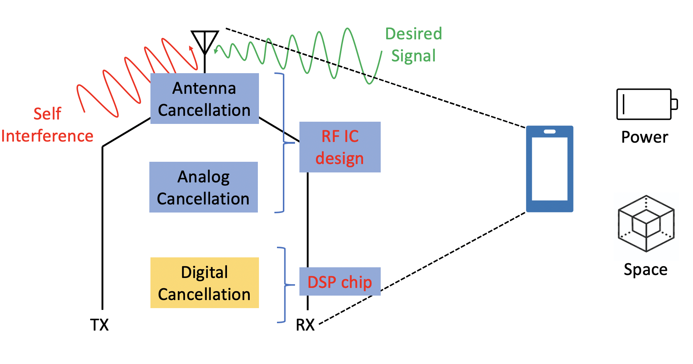

Project FDStudy: Are we there yet?
|
 |
|
|
| Full Duplex Communication has been extensively studied over the past decade in academia because of its potential to improve the throughput by two-folds. However, full duplex hasn't been deployed yet in end user devices like cell phones and laptops. In this paper, we find that high energy requirements of full duplex circuits and network traffic asymmetry are the 2 major reasons behind preventing full duplex from featuring in our devices today. |
Video
Citation
- Full Duplex Radios: Are we there yet?, Vaibhav Singh (Co-Primary), Akshay Gadre (Co-Primary) and Swarun Kumar, HotNets 2020 [PAPER]